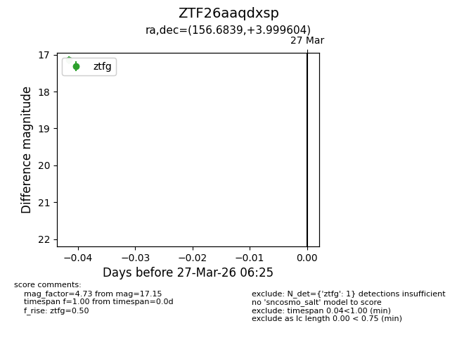
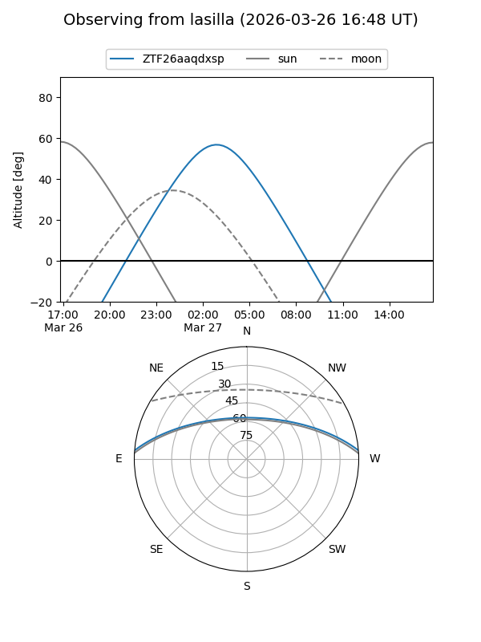
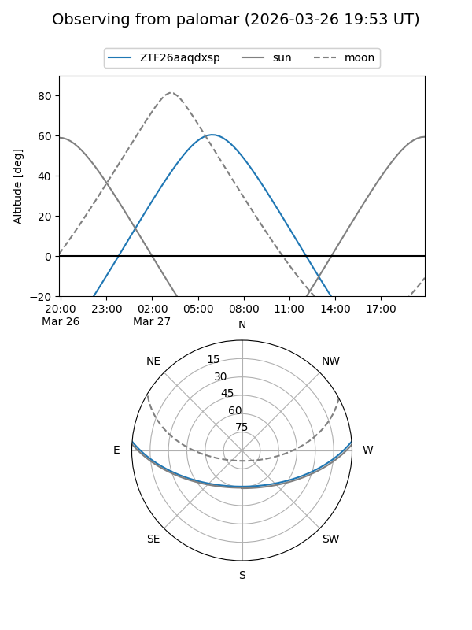

ZTF26aaqdxsp
Target ZTF26aaqdxsp at 2026-03-27 06:29
Aliases and brokers:
FINK: link
Lasair: link
ALeRCE: link
alt names
ZTF26aaqdxsp (ztf,fink_ztf)
Coordinates:
equatorial (ra, dec) = 156.6839,+3.99960
equatorial (HMS+DMS) = 10:26:44.15,+03:59:58.58
galactic (l, b) = (240.3232,+48.45753)
Flags:
Photometry:
last ztfg=17.15
1 ztfg detections
Lightcurve

Visibility


Additional plots